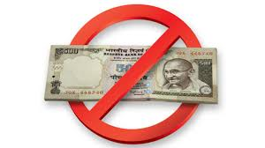
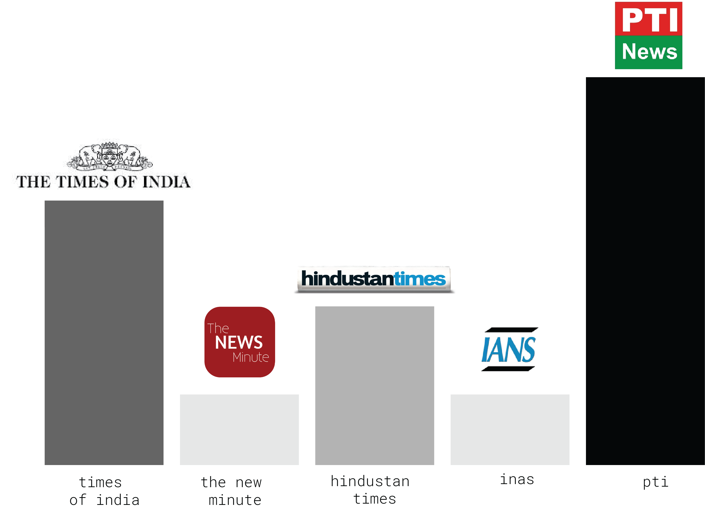
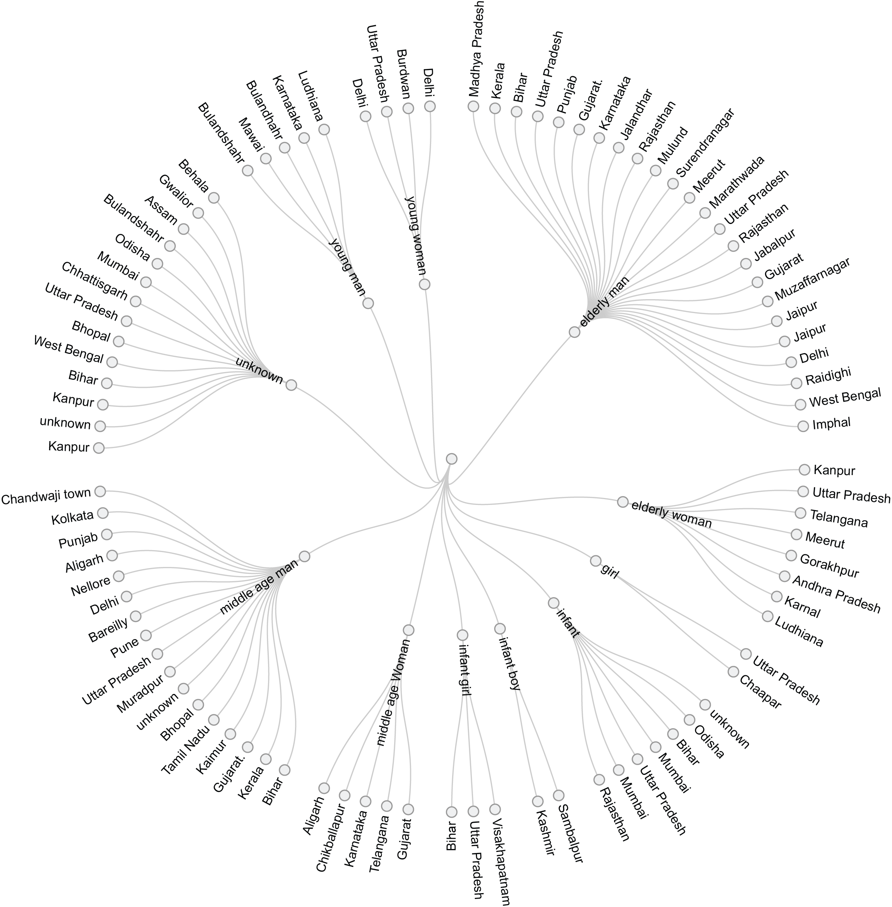
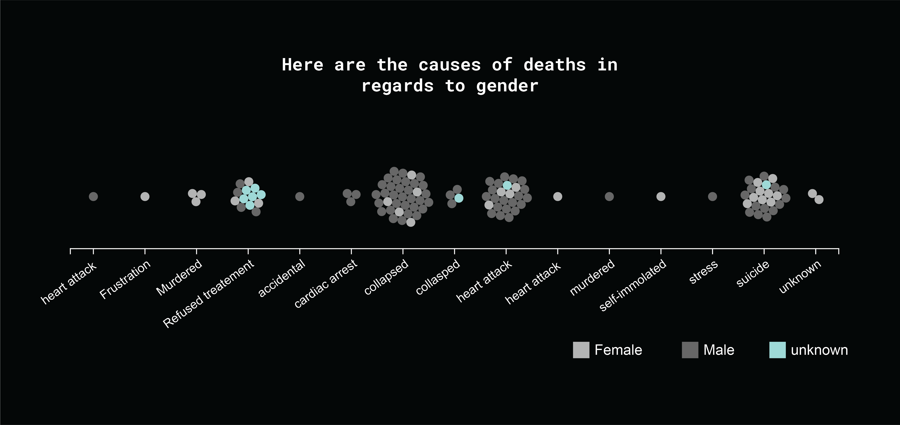
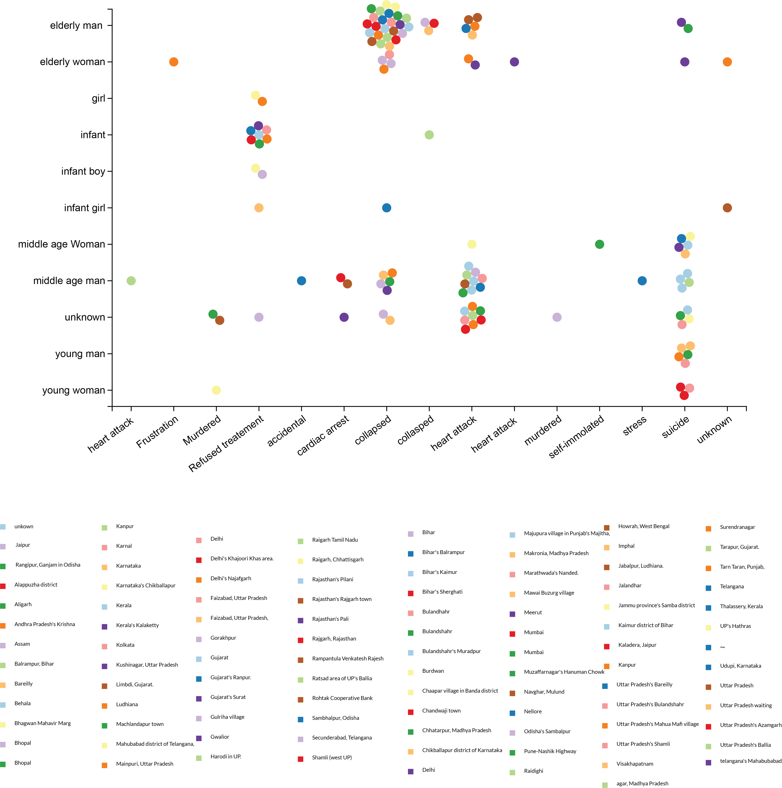

The economical calamity
Prime Minister Narendra Modi shook up the economy on 8 November, when he announced that currency denominations of Rs 500 and Rs 1,000 would no longer be deemed valid.
Opposition leaders have joined hands to protest the move and the Winter Session of the Parliament has seen several disruptions over the issue. Opposition leaders have claimed that 90+ people have died because of demonetisation.
To look into the death caused by demonetisation, I look into various news articles from 8 November 2016 to 9 December 2016.
The following bar chart show who are the news representative who took the subject seriously and try to inform the public about the massacre of demonetisation
The chart below show the location in India where these tradegy happens
  The following chart shows cause of deaths in different location.
“In spite of all the death did demonetisation make a difference ?”